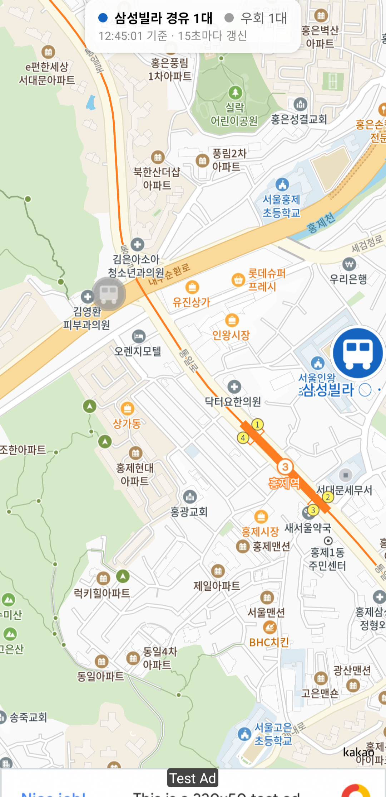

서대문01 마을버스 실시간 위치 알림 서비스 출시 준비 중
논골버스는 서울 서대문구 홍제동 일대를 운행하는 서대문01번 마을버스의 실시간 위치를 지도에 표시하는 안드로이드 앱입니다.
서대문01번은 같은 노선번호로 운행하면서도 일부 차량만 삼성빌라를 경유하고 나머지는 우회합니다. 그래서 정류장에서 기다리는 주민은 지금 오는 차가 자기 목적지를 지나는지 알 수 없었습니다. 논골버스는 공공데이터포털의 버스위치정보를 받아 차량마다 경유 여부를 판별하고, 지도 위에서 경유 차량과 우회 차량을 색으로 구분해 보여줍니다.
고령 주민 비중이 높은 지역 특성을 고려해, 화면을 열자마자 지금 오는 차가 어떤 차인지 한눈에 들어오도록 설계했습니다.
지도 위 파란 마커는 삼성빌라 경유 차량, 회색 마커는 우회 차량입니다. 상단 요약 바에서 현재 운행 중인 대수를 확인할 수 있습니다.

| 제공 기관 | 서울특별시 |
|---|---|
| 서비스명 | 서울특별시_버스위치정보조회 서비스 |
| 제공처 | 공공데이터포털 |
| 지도 | 카카오맵 SDK |
버스 위치 정보는 자체 중계 서버가 노선 단위로 15초에 한 번만 조회하여 캐시하고, 앱은 이 캐시를 내려받습니다. 따라서 이용자 수가 늘어도 공공API 호출량은 증가하지 않습니다.
Email: mauvemove.company@gmail.com